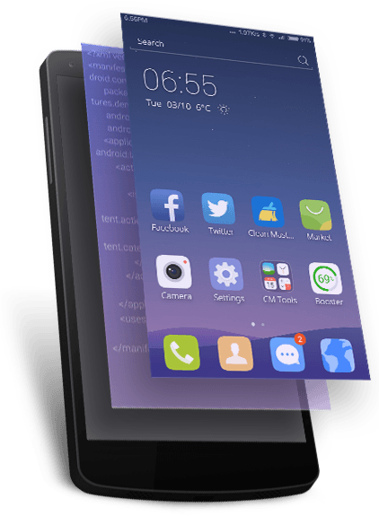

Line Launcher
Home
Language
한글
English
中文
日本語
Contact
About
This is new Line Launcher!
The perfect combination!

Sleek
Fast performance with style
Accelerate your startup speed by 100%! Make your apps load quicker, search the net with speed, and make full use of the capabilities of your phone with no dead weight.
Coool Update!!!